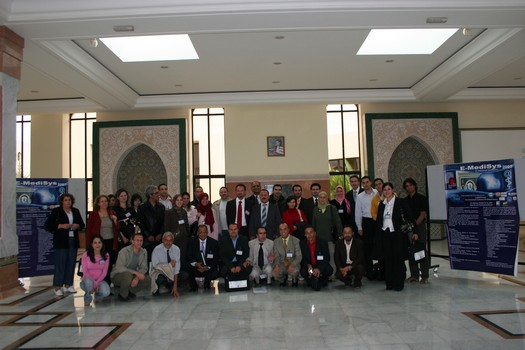

The conference will be held at the Faculty of Medicine and Pharmacy, Fez
Address: Route de Sefrou Besides the new stadium
For more information call: + 212 (0) 61 35 70 80
E-Medisys
is a new international conference, very innovative, in the topics of
Telemedicine.
This conference was born out of collaboration of three teams of
research divided between Sfax (Tunisia), Besançon (France) and
Fez (Morocco).
Fez, Morocco
October 24 - 26, 2007
The conference proceedings were distributed to the participants
in printed form under the
ISBN number : 9954-8905-0-5

Honour Chairman
Prof. Said OULBACHA
Ministry of the Professional Formation (Morocco)
Prof. Taib CHKILI
President of the University Mohammed V Souissi, Rabat (Morocco)
Prof. Louis LARENG
President of the Europeen Society of Telemedicine (France)
Prof. Taoufik OUAZZANI CHAHDI
President of the University Sidi Mohammed Ben Abdellah, Fez (Morocco)
Conference's Chairman
Prof. Mohamed Salim BOUHLEL
University of Sfax, Setit (Tunisia)
Prof. Jean-Christophe LAPAYRE
University of Franche Comté, LIFC (France)
Pres. Khalid MEKOUAR
President of ESISA, Fez (Morocco)